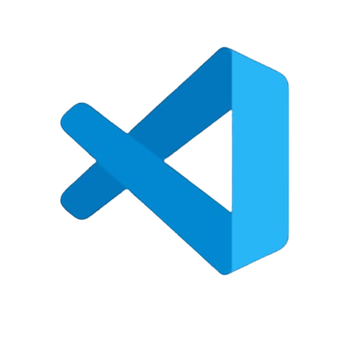
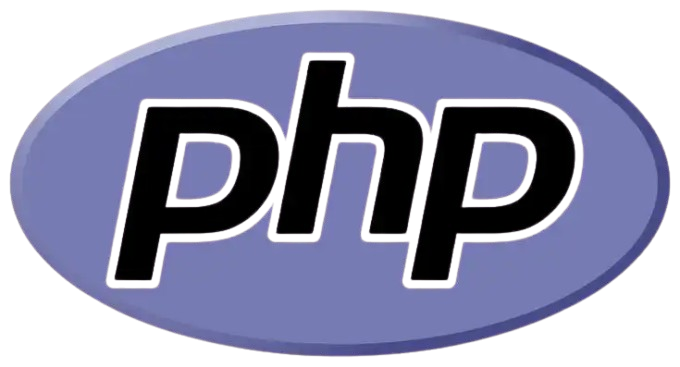
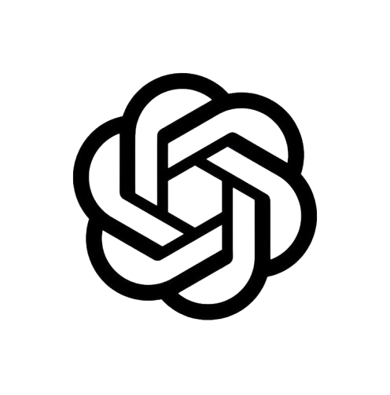
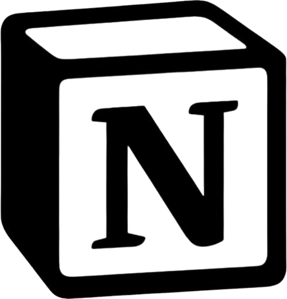
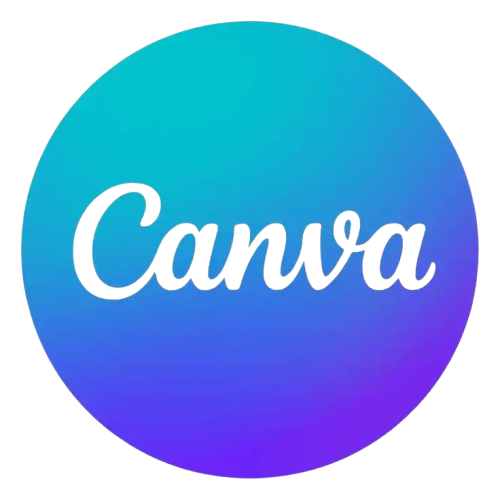
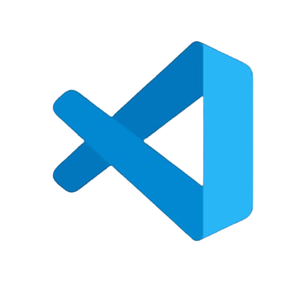
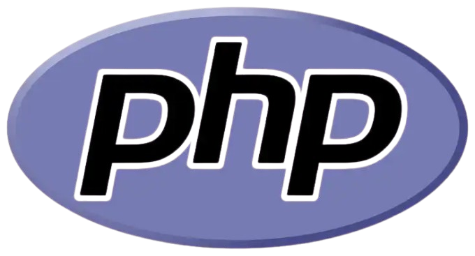
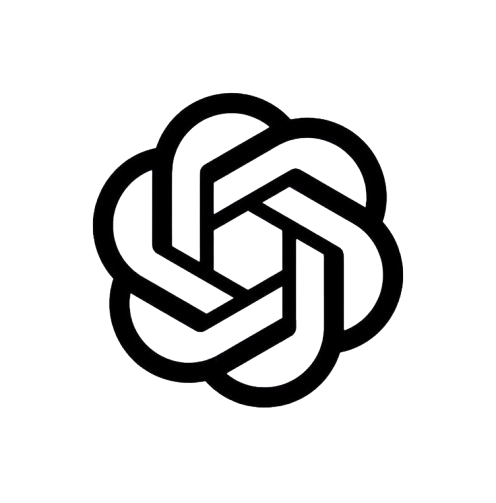
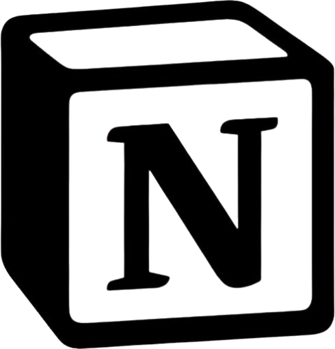
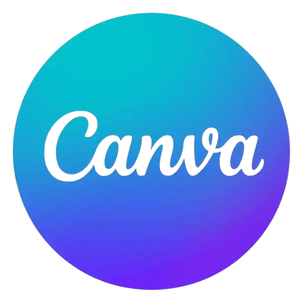

Développement web !
Nutriway - 2025
Nutriway - 2025
Vous arrivez ici sur le résultat d'un des plus gros projets de développement de ma deuxième année de BUT MMI : Nutriway.
Il rassemble recherche et design UX / UI ainsi que développement back et front end.
Par groupe de 4, l'objectif était de mettre en place un concept unique autour du thème “À table” sur une période d'octobre à janvier 2026.
Nous avons débuté la recherche UX avec benchmark, réalisation d'interviews, conception d'un persona, idéation, etc…et avons imaginé le concept suivant :
Nutriway, un site qui permet à l'utilisateur de choisir un objectif de santé atteignable grâce à l'alimentation et de lui proposer ainsi un programme de repas sur mesure, basé sur ses données personnelles.
Nous avons ainsi réalisé un moodboard puis les wireframes et prototypes de notre site en version mobile et desktop sur figma, ainsi que des tests utilisateurs pour relever les points de blocage.
Enfin, nous sommes passés à la partie UI en réalisant les maquettes finales.
En tant que chef de projet, la partie gestion de projet a représenté une part importante de la création de Nutriway. Nous avons élaboré un product backlog pour définir, entre autres, les fonctionnalités développées ou non, ainsi qu'un planning de suivi des tâches.
Pour l'étape de développement, je me suis occupé du développement back du site avec un camarade. Nous avons fait un GitHub partagé pour fluidifier la collaboration de tous.
J’ai utilisé l’IA chatGPT pour générer 10 objectifs puis 12 recettes par objectif avant de les intégrer dans la base de données avec tous les champs nécessaires.
Nous nous sommes ensuite répartis les pages et les fonctionnalités à développer en PHP.
La sécurité a été un point important de notre projet, en particulier pour hasher les mots de passe dans la base de données ou pour rendre certaines pages, comme le tableau de bord ou le profil, accessibles seulement si l'utilisateur est connecté, étant donné que nous avons inclus un système de session et un back office.
Deux de mes autres camarades ont ensuite fait la partie développement front avec les styles en CSS et les animations en javascript.
Pour finir, j'ai ensuite réalisé le dimensionnement du site, et nous avons acheté un nom de domaine chez Ionos et hébergé notre site sur O2switch.
Pour clôturer le projet, nous avons présenté notre travail et son aboutissement durant une soutenance de 15 minutes avec un jury de 5 professeurs.
Ce projet m'a ainsi permis de :
● Comprendre et mettre en place une démarche de recherche UX / UI complète,
● Réaliser des prototypes et maquettes figma très abouti,
● Concevoir un product backlog,
● Approfondir mes compétences en PHP (formulaire, système de session, favoris, back-office, etc…),
● Réaliser le dimensionnement d'un site,
● Expliquer de manière claire et synthétique mon travail devant un jury.
Compétences
 









Disnyz - Les plus grandes recettes des films Disney - 2025
Disnyz - Les plus grandes recettes des films Disney - 2025
Voici un projet très ambitieux. Dataviz avait pour objectif de montrer l'évolution de quelque chose à travers des données. Mon groupe et moi (3 personnes) avons décidé d'explorer le monde de Disney, univers qui a marqué notre enfance, afin de mettre en avant les plus grosses recettes des films et films d'animation Disney.
Nous avons ainsi rebaptisé notre projet Disnyz, prononcé /disniz/.
Nous n'avions que très peu de temps pour réaliser ce site one page (d’octobre à novembre 2025), mais surtout, avec mon groupe je me suis fixé l'objectif de terminer le code avant les vacances (dernière semaine d'octobre).
C’est pourquoi nous avons eu : 4 jours pour définir toutes les sources et données, 4 jours pour réaliser les maquettes, et enfin, 10 jours pour coder le site en HTML, CSS, JavaScript.
Pour recenser les données nous avons utilisé le site Wikidata Multisearch et stocké les 648 films (avec leurs recettes, leur genre, etc…) dans un tableau Excel. Nous l'avons ensuite exporté en fichier .CSV puis .JSON.
J’ai ensuite réalisé ma partie des maquettes sur Figma. Nous avons décidé de proposer un site totalement en anglais pour avoir plus de cohérence avec les données que nous avions récupérées.
Enfin, je suis passé à l'étape du code ! Pour développer les deux graphiques radiaux, j'ai passé des heures pour comprendre le fonctionnement des balises <path>, faire des calculs de coordonnées, etc…Finalement j'ai utilisé une fonction javascript que j'ai adapté pour calculer le pourcentage des tours de cercle en fonction des recettes des 15 premiers films et film d'animation de la liste.
Pour allier notre travail nous avons utilisé un GitHub partagé.
Enfin nous avons rassemblé toutes les sources des images et codes utilisés dans une page Source ainsi qu'une page Mention Légale, faisant suite à nos cours sur le droit d'auteur pour le numérique.
Ce projet m'a permis :
● D'apprendre à utiliser un Github partagé,
● D’approfondir mon apprentissages de JavaScript, en particulier les balises <path> et les fonctions,
● De mettre en application mes connaissances sur le droit du numérique.
● D’améliorer ma maîtrise de l’anglais
Compétences
Web Inventory - Les expressions françaises - 2024
Web Inventory - Les expressions françaises - 2024
Web Inventory…Un des plus gros projets de ma première année de BUT MMI !
Beaucoup plus abouti et réussi que mon premier site web, j’en suis très fière.
De janvier à juin 2025, l’objectif était de coder un site interactif connecté à une base de données pour répertorier des éléments. J’ai choisi de développer un site sur les expressions françaises.
Tout d’abord, ce projet m’a demandé un gros travail de recensement des expressions. Il m’a fallu trouver la signification, la traduction anglaise, le siècle d’apparition et le contexte historique d’une cinquantaine d’expressions.
J’ai donc travaillé avec un tableau sur Notion.
Ensuite j’ai créé la base de données sur PhpMyAdmin.
Puis je suis passé au code HTML, CSS, JavaScript, PHP. J’ai utilisé Github pour sauvegarder mon travail.
Pour être certaine de finir mon site dans les temps, j’ai également créé une base de données sur Notion pour y décrire toutes les étapes à faire, et pouvoir visualiser ma progression au fur et à mesure.
Le code fut une étape laborieuse, mais j’ai tout de même réussi à obtenir le résultat que je souhaitais, en particulier pour le système de favoris sur chaque expression. J’ai également créé une session administrateur afin de pouvoir choisir d’intégrer ou non les expressions proposées par les utilisateurs sur le site.
Une autre étape importante était la conformité de mon code et de mon site aux règles Opquast : appliquer les bonnes pratiques qui rendent un site plus fiable, inclusif, performant et respectueux de ses utilisateurs.
Enfin, j’ai hébergé le site sur le domaine de l’université.
Ce projet m’a permis de :
● Comprendre comment fonctionne une base de donnée sur PhpMyAdmin,
● M’améliorer grandement en HTML, CSS, JavaScript et PHP,
● Maîtriser l’utilisation de Github,
● Travailler sur ma gestion du temps et de mon organisation,
● Maîtriser l’hébergement et la mise en ligne d’un site web.